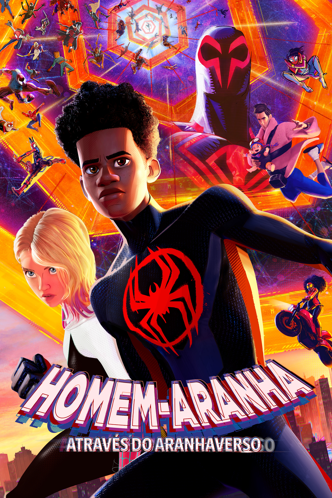

Depois de lutar ao lado dos Vingadores em Guerra Civil, Peter Parker tenta equilibrar a vida de adolescente com a de herói em Nova York. Quando o vilão Abutre surge traficando armas alienígenas, Peter precisa provar que é mais que um “amigão da vizinhança”.

Após os eventos de Ultimato, Peter viaja para a Europa com seus colegas. Sua viagem é interrompida quando surge Mysterio, um suposto aliado que esconde intenções perigosas.

Quando sua identidade é revelada, Peter pede ajuda ao Doutor Estranho. O feitiço abre portais para o multiverso, trazendo vilões e outros Homens-Aranha de universos diferentes.

Miles Morales, um adolescente, ganha poderes de aranha e conhece versões alternativas do herói. Juntos, eles precisam salvar suas realidades de uma ameaça interdimensional.

Miles reencontra Gwen Stacy e descobre uma sociedade secreta de Homens-Aranha de todo o multiverso. Um novo vilão ameaça destruir tudo, e Miles precisa escolher seu próprio destino.